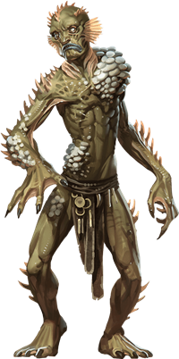

Sea Spawn
Many of the stories sung as sea shanties and passed on as tales in dockside taverns tell of people lost to the sea -- but not merely drowned and gone. These unfortunates are taken by the ocean and live on as sea spawn, haunting the waves like tortured reflections of their former selves. Coral encrusts them. Barnacles cling to their cold skin. Lungs that once filled with air can now breathe in water as well.

Tales provide myriad reasons for these strange transformations. "Be wary of falling in love with a sea elf or a merfolk," some say. "Return to port before a storm, no matter how tempting the catch." "Honor the sea gods as they demand, but never promise them your heart." Such cautionary tales disguise the deeper truth: things lurk beneath the waves that strive to claim the hearts and minds of land dwellers.
Deep Thralls. Krakens, morkoths, sea hags, marids, storm giants, dragon turtles -- all of these sea creatures and more can mark mortals as their own and claim them as minions. Such people might become beholden to their master through a bleak bargain, or they might find themselves cursed by such creatures. Once warped into a fishlike form, the person can't leave the sea for long without courting death.
Anatomical Diversity. Sea spawn come in a wide variety of forms. An individual might have a tentacle for an arm, the jaws of a shark, a sea urchin's spines, a whale's fin, octopus eyes, seaweed hair, or any combination of such qualities. Some sea spawn have piscine body parts that provide them with special abilities beyond those of an ordinary humanoid.
Environment
Coastal, Underwater
Token

Sea Spawn
Medium humanoid, neutral evil
- Armor Class 11 (natural armor)
- Hit Points 32 (5d8 + 10)
- Speed 20 ft., swim 30 ft.
STR DEX CON INT WIS CHA 15 (+2) 8 (-1) 15 (+2) 6 (-2) 10 (+0) 8 (-1)
- Proficiency Bonus +2
- Saving Throws
- Damage Vulnerabilities
- Damage Resistances
- Damage Immunities
- Condition Immunities
- Skills
- Senses darkvision 120 ft.,passive Perception 10
- Languages understands Aquan and Common but can't speak
- Challenge 1
Limited Amphibiousness. The sea spawn can breathe air and water, but needs to be submerged in the sea at least once a day for 1 minute to avoid suffocating.
Actions
Multiattack. The sea spawn makes three attacks: two unarmed strikes and one with its Piscine Anatomy.
Unarmed Strike. Melee Weapon Attack: +4 to hit, reach 5 ft., one target. Hit: 4 (1d4 + 2) bludgeoning damage.
Piscine Anatomy. The sea spawn has one or more of the following attack options, provided it has the appropriate anatomy: * Bite. Melee Weapon Attack: +5 to hit, reach 5 ft., one target. Hit: 4 (1d4 + 2) piercing damage. * Poison Quills. Melee Weapon Attack: +5 to hit, reach 5 ft., one creature. Hit: 3 (1d6) poison damage, and the target must succeed on a DC 12 Constitution saving throw or be poisoned for 1 minute. The target can repeat the saving throw at the end of each of its turns, ending the effect on itself on a success. * Tentacle. Melee Weapon Attack: +5 to hit, reach 10 ft., one target. Hit: 5 (1d6 + 2) bludgeoning damage, and the target is grappled (escape DC 12) if it is a Medium or smaller creature. Until this grapple ends, the sea spawn can't use this tentacle on another target.